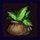 |
약초 | 상처에 잘 드는 성분이 함유된 식물 ■ HP : 30 회복 |
약잎 1 | 텅 빈 섬 작업대 |
| 상급 약초 | 상처에 매우 잘 드는 성분이 함유된 식물 ■ HP : 45 회복 |
상급 약잎 1 | 텅 빈 섬 작업대 | |
| 해독초 | 해독 작용이 있는 풀을 섞은 약 ■ 독을 치유한다 ※ 씁쓸버섯을 얻는다 (잠금 해제) |
약잎 1 씁쓸버섯 1 |
텅 빈 섬 작업대 | |
| 만월환 | 마비를 치유하는 새까만 환약 ■ 마비을 치유한다 ※ 마비꽃 씨앗을 얻는다 (잠금 해제) |
약잎 1 마비꽃 씨앗 1 |
텅 빈 섬 작업대 | |
|
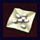 |
천사의 진정제 | 강한 쓴맛이 있는 하얀 약 ■ 혼란을 치유한다 ※ 광란의 발톱을 얻는다 (잠금 해제) |
약잎 1 광란의 발톱 1 |
텅 빈 섬 작업대 |
| 샤나크의 약 | 신변에 닥친 저주를 푸는 약 ■ 저주을 푼다 ※ 빌더 하트 100 교환 (잠금 해제) |
약잎 1 은 1 |
텅 빈 섬 작업대 | |
| 세계수의 물방울 | 세계수의 잎에서 추출한 물방울 ■ 주변 아군의 HP 70~80 회복 |
스토리 중간 보상 문부르크 |
/ | |
| 세계수의 잎 | 세계수의 잎으로 만들어진 비약 ■ 딱 한 번 부활한다 / 가지고 있기만 해도 효과가 있다 |
보물 상자 | / | |
|
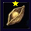 |
생명의 나무 열매 | 생명력이 넘치는 귀중한 열매 ■ 최대 HP 5 상승 |
보물 상자 | / |
|
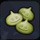 |
독 정화의 쿠키 | 고추냉이와 약잎을 섞은 쿠키 ■ 조리시간 : 45초 ■ 독을 방지하는 효과가 있다 |
밀 1 약잎 1 고추냉이 1 |
3칸 조리대 |
| 만월의 쿠키 | 고추와 약잎을 섞은 쿠키 ■ 조리시간 : 45초 ■ 마비를 방지하는 효과가 있다 |
밀 1 약잎 1 고추 1 |
3칸 조리대 | |
| 이성의 쿠키 | 파와 약잎을 섞은 쿠키 ■ 조리시간 : 45초 ■ 혼란를 방지하는 효과가 있다 |
밀 1 약잎 1 파 1 |
3칸 조리대 | |
|
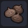 |
깨움의 쿠키 | 꺼피와 약잎을 섞은 쿠키 ■ 조리시간 : 45초 ■ 잠를 방지하는 효과가 있다 |
밀 1 약잎 1 커피콩 1 |
3칸 조리대 |
|
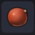 |
양배추 씨앗 | 부드러운 초록 잎이 공 모양으로 돋아나는 씨앗 ■ 밭에 심으면 모종이 싹튼다 |
주렁주렁섬 | / |
| 밀 씨앗 | 곧게 뻗은 이삭에 황금빛 낟알이 열리는 씨앗 ■ 밭에 심으면 모종이 싹튼다 |
질퍽질퍽섬 | / | |
|
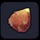 |
토마토 씨앗 | 수분이 가득한 동그랗고 빨간 열매가 열리는 씨앗 ■ 지지대와 같이 밭에 심으면 모종이 싹튼다 |
주렁주렁섬 | / |
|
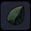 |
파 씨앗 | 끝부분이 녹색인 하얗고 길쭉한 줄기가 자라는 씨앗 ■ 밭에 심으면 모종이 싹튼다 |
꽁꽁섬 | / |
| 콩 씨앗 | 녹색 꼬투리에 안에 동그란 열매가 자라는 씨앗 ■ 밭에 심으면 모종이 싹튼다 |
출렁출렁섬 | / | |
|
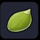 |
호박 씨앗 | 지면에 크고 단단한 녹색 열매가 열리는 씨앗 ■ 밭에 심으면 모종이 싹튼다 |
질퍽질퍽섬 | / |
|
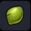 |
고추냉이 씨앗 | 물속에 알싸한 향이 나는 녹색 열매가 열리는 씨앗 ■ 깨끗한 논에 심으면 모종이 싹튼다 |
출렁출렁섬 | / |
| 수수 씨앗 | 달콤한 즙이 나오는 가늘고 긴 줄기가 자라는 씨앗 ■ 논에 심으면 모종이 싹튼다 |
주렁주렁섬 | / | |
| 멜론 씨앗 | 둥글고 달콤한 향의 녹색 열매가 열리는 씨앗 ■ 밭에 심으면 모종이 싹튼다 |
출렁출렁섬 | / | |
|
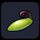 |
박가지 씨앗 | 불룩하게 부푼 열매가 열리는 씨앗 ■ 지지대와 같이 밭에 심으면 모종이 싹튼다 |
질퍽질퍽섬 | / |
| 고추 씨앗 | 빨갛고 뾰족한 얼얼하게 매운 열매가 열리는 씨앗 ■ 밭에 심으면 모종이 싹튼다 |
뒹굴뒹굴섬 | / | |
|
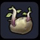 |
감자 씨앗 | 땅속에 포슬포슬한 열매가 열리는 씨앗 ■ 밭에 심으면 모종이 싹튼다 |
꽁꽁섬 | / |
| 커피콩 씨앗 | 동그랗고 향기로운 작은 빨간 열매가 열리는 씨앗 ■ 밭에 심으면 모종이 싹튼다 |
번쩍번쩍섬 | / | |
|
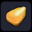 |
옥수수 씨앗 | 노란 낱알이 가득 한 길고 굵은 열매가 열리는 씨앗 ■ 밭에 심으면 모종이 싹튼다 |
뒹굴뒹굴섬 | / |
| 딸기 씨앗 | 빨간 삼각형의 달콤하고 작은 열매가 열리는 씨앗 ■ 밭에 심으면 모종이 싹튼다 |
주렁주렁섬 | / | |
|
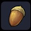 |
도토리 | 숲에서 많이 자라는 큰 나무의 씨앗 ■ 심으면 묘목이 자란다 |
질퍽질퍽섬 블러드 핸드(어둑어둑섬) |
/ |
|
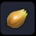 |
치유잎 씨앗 | 몸에 좋은 잎을 지닌 덤불이 자라는 씨앗 ■ 흙에 심으면 싹이 난다 |
주렁주렁섬 | / |
| 하얀 꽃 씨앗 | 심으면 하얀 꽃이 피는 씨앗 | 주렁주렁섬 | / | |
| 노란 꽃 씨앗 | 심으면 노란 꽃이 피는 씨앗 | 주렁주렁섬 | / | |
| 분홍 꽃 씨앗 | 심으면 분홍 꽃이 피는 씨앗 | 주렁주렁섬 | / | |
| 검은 꽃 씨앗 | 심으면 검은 꽃이 피는 씨앗 | 출렁출렁섬 | / | |
| 보라 꽃 씨앗 | 심으면 보라 꽃이 피는 씨앗 | 출렁출렁섬 | / | |
|
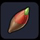 |
빨간 꽃 씨앗 | 심으면 빨간 꽃이 피는 씨앗 | 꽁꽁섬 | / |
| 초록 꽃 씨앗 | 심으면 초록 꽃이 피는 씨앗 | 주렁주렁섬 | / | |
| 파란 꽃 씨앗 | 심으면 파란 꽃이 피는 씨앗 | 주렁주렁섬 | / | |
|
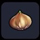 |
글라디올러스 씨앗 | 심으면 글라디올러스가 피는 씨앗 | 뒹굴뒹굴섬 | / |
|
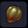 |
마비 꽃 씨앗 | 심으면 마비 꽃이 피는 씨앗 | 어둑어둑섬 산 정상 마비꽃 |
/ |
| 기둥 선인장 씨앗 | 심으면 기둥 선인장이 자라는 씨앗 | 뒹굴뒹굴섬 / 기둥 선인장 머리를 검으로 파괴 | / | |
|
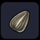 |
해바라기 씨앗 | 심으면 해바라기가 피는 씨앗 | 뒹굴뒹굴섬 | / |
|
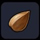 |
목초 씨앗 | 가축이 좋아하는 풀이 자라는 씨앗 ■ 심으면 싹이 난다 |
주렁주렁섬 | / |
| 신비의 씨앗 | 신비롭고 아름다운 꽃을 피우는 씨앗 ■ 밭에 심으면 모종이 싹튼다 |
출렁출렁섬 | / | |
|
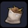 |
비료 | 오크가 가르쳐 준 흙에 영양을 주는 약 ■ 주변의 흙을 부엽토로 바꾼다 |
밀 10 거름 2 |
텅 빈 섬 작업대 |
| 초원 경단 | 초원의 생명력으로 가득한 경단 ■ 지면에 놓으면 미미즌이 흙을 초원으로 만든다 |
초원 씨앗 1 거름 2 |
텅 빈 섬 작업대 | |
|
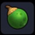 |
숲 경단 | 숲의 싱그러움으로 가득한 경단 ■ 지면에 놓으면 미미즌이 흙을 숲으로 만든다 |
초원 씨앗 1 도토리 1 거름 2 |
텅 빈 섬 작업대 |
| 모래 기와 | 모래의 힘을 지닌 기와 ■ 지면에 놓으면 골렘이 주변을 모래로 만든다 ※ 골렘를 동료로 대려온다 (잠금 해제) |
석재 1 모래 1 |
텅 빈 섬 작업대 | |
| 아이스바 | 후덥지근해지면 생가가나는 막대 아이스크림 장식 ■ 지면에 놓으면 예티가 주변을 설원으로 만든다 ※ 예티를 동료로 대려온다 (잠금 해제) |
얼음 1 나무 1 |
텅 빈 섬 작업대 | |
| 마물의 먹이 | 마물이 좋아하는 음식 ■ 약해진 마물에게 주면.....? |
씁쓸버섯 1 마른 풀 1 |
2칸 조리대 이상 | |
|
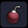 |
투척 폭탄 | 던지기 편한 자그만한 폭탄 ■ 맞으면 데미지 |
폭탄 돌 1 철괴 1 실 1 |
텅 빈 섬 작업대 |
| 열쇠 | 철을 가공해 만든 열쇠 ■ 자물쇠가 달린 문을 열 수 있다 |
스토리 진행 | / | |
| 금 열쇠 | 금을 가공해 만든 열쇠 ■ 금색 자물쇠가 달린 문을 열 수 있다 |
스토리 진행 | / | |
|
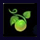 |
초원 씨앗 | 흙을 변화시키기 위한 마법 도구 ■ 흙에 심으면 풀이 흙의 표면을 덮는다 |
머드 핸드, 애로우 임프 몬조라섬, 질퍽질퍽섬 |
/ |
|
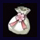 |
꽃피는 재 | 나무에 꽃을 피우는 마법의 재 ■ 주위 나무를 벚나무로 바꾼다 |
벚꽃 잎 1 | 1칸 조리대 이상 |
| 컬러 페인트 - 하양 | 염색을 위한 흰색 페인트 ■ 사용하면 천이나 나무로 만든 가구의 색이 바뀐다 |
흰색 염료 10 | 염료통 | |
| 컬러 페인트 - 검정 | 염색을 위한 검은색 페인트 ■ 사용하면 천이나 나무로 만든 가구의 색이 바뀐다 |
검은색 염료 10 | 염료통 | |
| 컬러 페인트 - 보라 | 염색을 위한 보라색 페인트 ■ 사용하면 천이나 나무로 만든 가구의 색이 바뀐다 |
보라색 염료 10 | 염료통 | |
| 컬러 페인트 - 분홍 | 염색을 위한 분홍색 페인트 ■ 사용하면 천이나 나무로 만든 가구의 색이 바뀐다 |
분홍색 염료 10 | 염료통 | |
| 컬러 페인트 - 빨강 | 염색을 위한 빨간색 페인트 ■ 사용하면 천이나 나무로 만든 가구의 색이 바뀐다 |
빵강색 염료 10 | 염료통 | |
| 컬러 페인트 - 초록 | 염색을 위한 초록색 페인트 ■ 사용하면 천이나 나무로 만든 가구의 색이 바뀐다 |
초록색 염료 10 | 염료통 | |
|
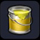 |
컬러 페인트 - 노랑 | 염색을 위한 노란색 페인트 ■ 사용하면 천이나 나무로 만든 가구의 색이 바뀐다 |
노랑색 염료 10 | 염료통 |
| 컬러 페인트 - 파랑 | 염색을 위한 파랑색 페인트 ■ 사용하면 천이나 나무로 만든 가구의 색이 바뀐다 |
파랑색 염료 10 | 염료통 | |
| 변화의 지팡이 | 마물 등으로 모습을 바꿀 수 있는 마법의 지팡이 ■ 얼마든지 사용 가능 |
스토리 진행 문부르크 |
/ | |
| 라의 거울 | 진짜 모습을 비추는 마법의 거울 ■ 얼마든지 사용 가능 |
스토리 진행 문부르크 |
/ | |
|
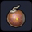 |
팔척 구슬 | 밤하늘을 수놓는 불꽃이 담긴 구슬 ■ 발사통에 사용 / 색 변경 가능 |
흙 1 실 1 기름 1 |
텅 빈 섬 작업대 |
| 전사의 여행의 악보 | 추억이 되살아나는 악보 ■ "전사의 여행" 연주 가능 |
풀 실 10 | 텅 빈 섬 작업대 | |
| 외로운 마을의 악보 | 추억이 되살아나는 악보 ■ "외로운 마을" 연주 가능 |
풀 실 10 | 텅 빈 섬 작업대 | |
| 전설의 왕성의 악보 | 추억이 되살아나는 악보 ■ "전설의 왕성" 연주 가능 |
풀 실 10 | 텅 빈 섬 작업대 | |
| 상인의 여행의 악보 | 추억이 되살아나는 악보 ■ "상인의 여행" 연주 가능 |
풀 실 10 | 텅 빈 섬 작업대 | |
| 아득한 여행의 악보 | 추억이 되살아나는 악보 ■ "아득한 여행" 연주 가능 |
풀 실 10 | 텅 빈 섬 작업대 | |
| 성소의 악보 | 추억이 되살아나는 악보 ■ "성소" 연주 가능 |
풀 실 10 | 텅 빈 섬 작업대 | |
| 빛의 마을의 악보 | 추억이 되살아나는 악보 ■ "빛의 마을" 연주 가능 |
풀 실 10 | 텅 빈 섬 작업대 | |
| 활기찬 거리의 악보 | 추억이 되살아나는 악보 ■ "활기찬 거리" 연주 가능 |
풀 실 10 | 텅 빈 섬 작업대 | |
| 부기우기 주점의 악보 | 추억이 되살아나는 악보 ■ "부기우기 주점" 연주 가능 |
풀 실 10 | 텅 빈 섬 작업대 | |
| 정열의 춤의 악보 | 추억이 되살아나는 악보 ■ "정열의 춤" 연주 가능 |
풀 실 10 | 텅 빈 섬 작업대 | |
| 거리의 악보 | 추억이 되살아나는 악보 ■ "거리" 연주 가능 |
풀 실 10 | 텅 빈 섬 작업대 | |
| 고대 유적의 악보 | 추억이 되살아나는 악보 ■ "고대 유적" 연주 가능 |
풀 실 10 | 텅 빈 섬 작업대 | |
| 사랑을 속삭이다 악보 | 추억이 되살아나는 악보 ■ "사랑을 속삭이다" 연주 가능 |
풀 실 10 | 텅 빈 섬 작업대 | |
| 낮의 왕궁의 악보 | 추억이 되살아나는 악보 ■ "낮의 왕궁" 연주 가능 |
풀 실 10 | 텅 빈 섬 작업대 | |
| 밤의 왕궁의 악보 | 추억이 되살아나는 악보 ■ "밤의 왕궁" 연주 가능 |
풀 실 10 | 텅 빈 섬 작업대 | |
| 하늘을 나는 신비의 악보 | 추억이 되살아나는 악보 ■ "하늘을 나는 신비" 연주 가능 |
풀 실 10 | 텅 빈 섬 작업대 | |
| 낙원의 악보 | 추억이 되살아나는 악보 ■ "낙원" 연주 가능 |
풀 실 10 | 텅 빈 섬 작업대 | |
| 다시마 | 해안에서 채취할 수 있는 영양 만점 해초 ■ 만복 5% 회복 ■ HP 5 회복 |
해안 / 해저 | / | |
| 분홍 조개 | 해안에 서식하는 조개의 살 | 해안 / 거품나오는 모래 파괴 | / | |
| 게의 집게발 | 안쪽이 뾰족뾰족한 거대한 게의 집게발 | 게종류 마물 | / | |
|
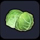 |
양배추 | 녹색 잎으로 뒤덮힌 둥근 야채 ■ 만복 10% 회복 ■ HP 5 회복 |
주렁주렁섬 밭에서 수확 |
/ |
| 빨간색 양배추 | 빨간색으로 자란 보기 드문 양배추 ■ 만복 10% 회복 ■ HP 5 회복 |
개척지 래시피 10종 작물 재배 완료 후 낮은확률로 밭에서 등장 | / | |
|
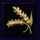 |
밀 | 주식으로도 이용되는 얇은 껍질이 부픈 작은 열매 | 질퍽질퍽섬 밭에서 수확 |
/ |
|
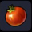 |
토마토 | 새콤한 맛이 나는 빨갛고 둥근 야채 ■ 만복 10% 회복 ■ HP 5 회복 |
주렁주렁섬 지주있는 밭에서 수확 |
/ |